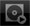
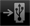
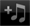
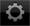

Panneaux de rekordbox
Menu principal
Lorsque rekordbox (iOS/Android) est lancé, le menu principal apparaît.
 Prepare
Prepare
Pour créer les différents types d’informations concernant les points, les listes de lecture, etc. pour préparer des prestations DJ.

 Load
Load
Pour relier des lecteurs DJ en vue de prestations DJ.
 Connect
Connect
Pour importer des fichiers de musique déjà analysés sur rekordbox (Mac/Windows) sur l’ordinateur, les différents types d’informations des points, les listes de lecture, etc. sur rekordbox (iOS/Android). Utilisé également pour répercuter les différents types d’informations des points, les listes de lecture, etc. réactualisés avec rekordbox (iOS/Android) dans rekordbox (Mac/Windows).
 Import
Import
Pour analyser les fichiers de musique présents sur le dispositif portable et les ajouter à la bibliothèque rekordbox (iOS/Android).
 Help
Help
Ouvre le menu d’aide.
 Settings
Settings
Pour vérifier et changer les différents réglages.
Barre d’outils
Reportez-vous au tableau suivant pour les icônes apparaissant dans la barre d’outils au bas de l’écran.
Icône | Description | |
Menu | Affiche le menu principal. | |
Browse | Pour revenir au niveau supérieur du panneau d’exploration . | |
 | Playing | Pour ouvrir le panneau du lecteur et afficher le morceau en cours de lecture. |
 | USB | Pour parcourir le contenu d’un dispositif USB connecté à l’appareil DJ (XDJ-AERO) et le lire sur l’appareil DJ (XDJ-AERO).
|
 | Import | Pour analyser les fichiers de musique présents sur le dispositif portable et les ajouter à la bibliothèque rekordbox (iOS/Android). |
 | Settings | Pour vérifier et changer les différents réglages. |
Help | Ouvre le fichier d’aide (mode d’emploi). | |